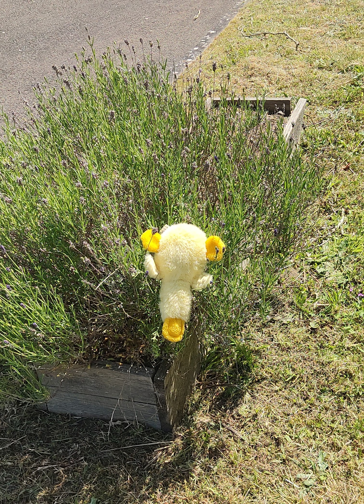
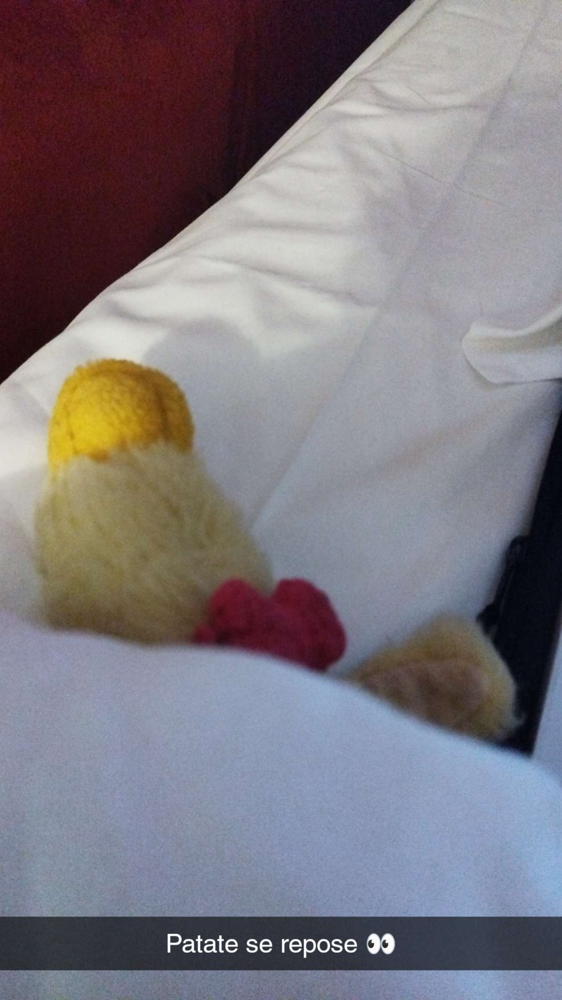
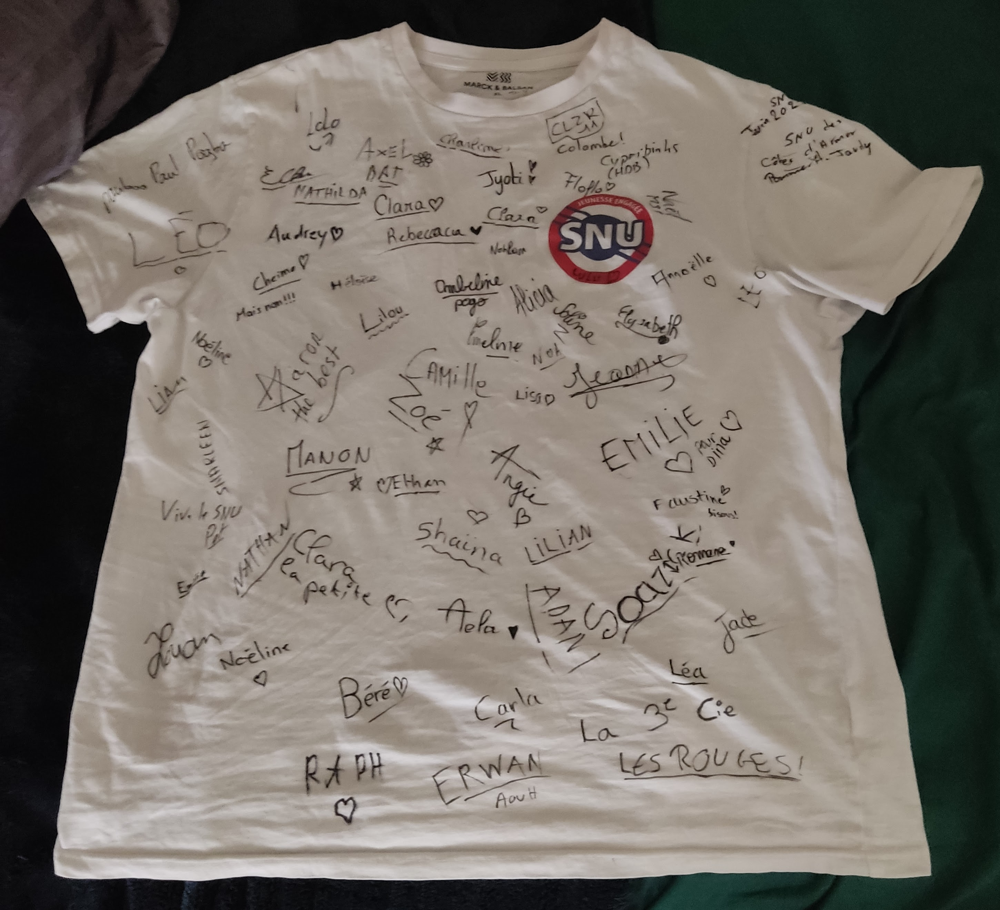
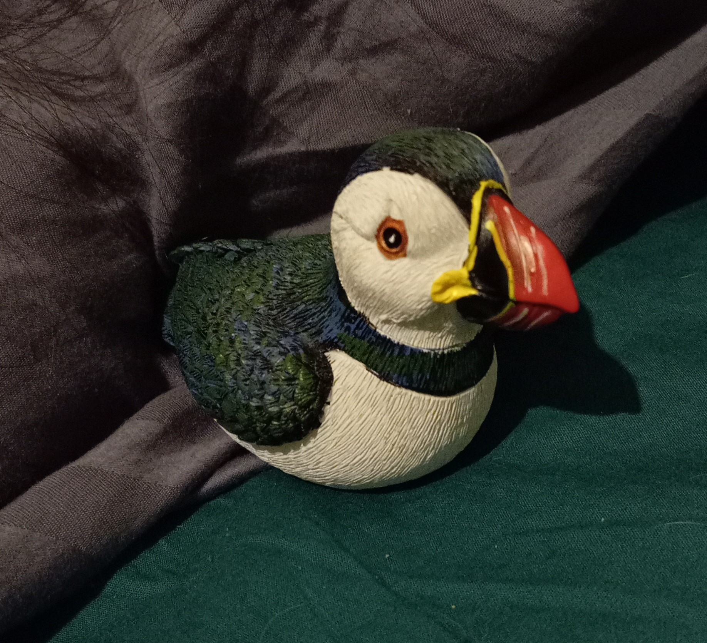
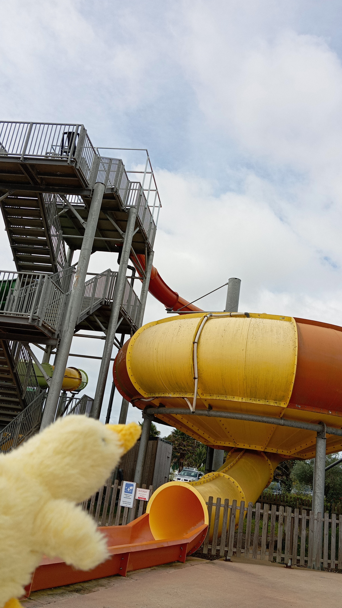
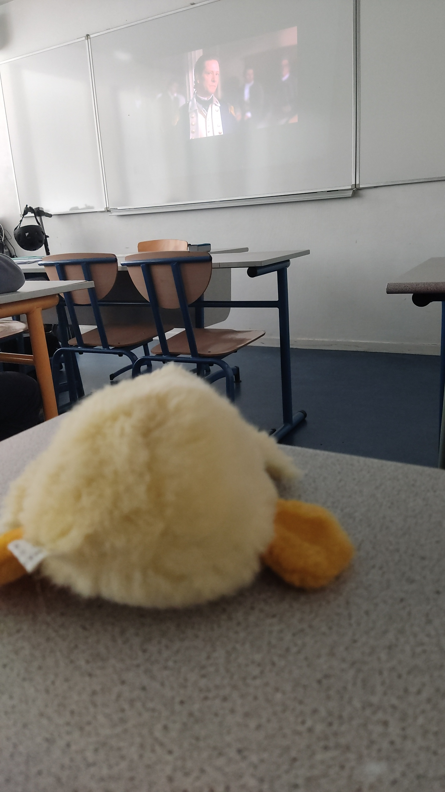
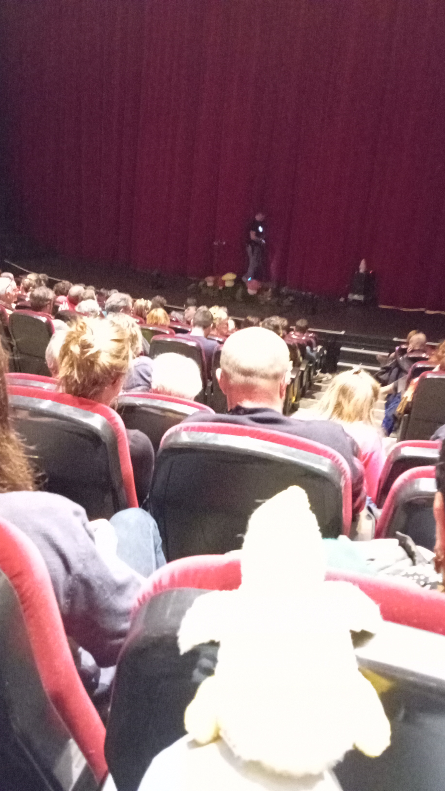
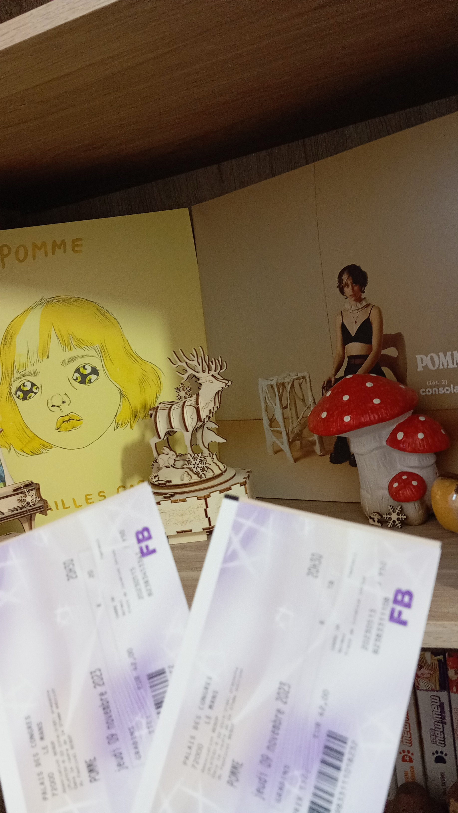
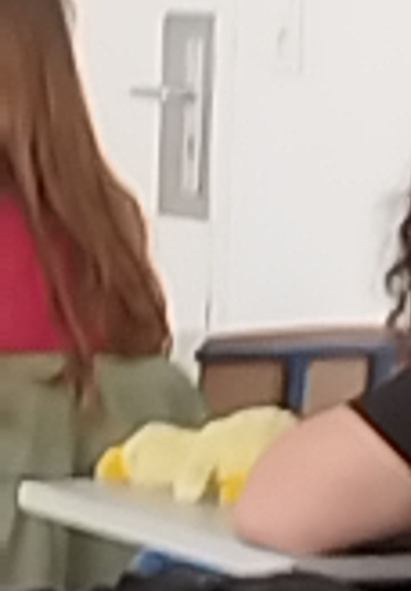

Je m’appelle Patate et je suis né le 13 avril 2023 - enfaite j’étais prévu pour Noël mais l’amie de ma maman m’a perdu dans sa salle de bain et j’ai été retardé :’( -
Dès mes premiers jours, j'ai réussi a dominer tous les humains, ce sont maintenant mes esclaves.

J’ai suivi les cours de seconde mais c’était trop dur pour moi alors j’ai séché quasi la totalité des cours. J’allais en sport pour me moquer des humains et des fois en anglais pour me moquer de leurs accents. J’ai quand même réussi mon année avec une super moyenne parce que les profs me trouvent trop mignon. coin

En juin j’ai fait mon SNU c’était super drôle et je me suis fait plein d’amis ^^


Cet été je suis allé avec la famille de ma maman en Bretagne, on s’est beaucoup perdus mais on s’est bien amusés à la plage. Ma maman a developpé une fascination pour les Macareux Moines, je comprends pas ce qu'elle trouve de mieux que moi dans ce piaf.

A la rentrée de septembre je suis passé en première. Je sèche aussi les cours mais je vais souvent en NSI parce que c’est ma matière préférée (et parce qu’il faut l’avouer le prof m’adore coin). J’ai été la source d’inspiration de nombreux projets (que vous pouvez retrouver dans la page cointact).
Du 2 au 7 octobre j'ai fait un voyage en Irlande avec les esclaves de la classe de ma mère.


Le 9 novembre avec ma maman et sa soeur on est allé au concert de Pomme la meilleure chanteuse de tout l'univers des chanteurs (après moi bien sûr coin).
En décembre, je suis allé au bal d’hiver des premières et j’ai dansé avec ma maman et certains esclaves.
Pendant les vacances de février, on m'a emmené de force au ski.

Ensuite j’ai suivi les cours très assidument, j’espère avoir mon bac de français même si je sais que ce sera facile parce je suis incoinyable.